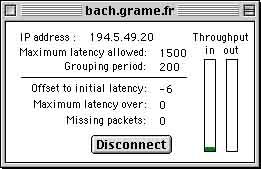
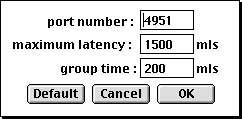

Le driver WAN - MidiShare permet la communication
temps réel sur Internet aux applications clientes de MidiShare.
La connexion à une machine distante est controlée
par l'utilisateur. Une fois connecté, la machine distante
apparait comme un port MidiShare en mode Driver, ou comme un client
MidiShare dans le cas contraire (voir Setup
Menu).
Lors de la connexion, le driver établit à la fois
une socket TCP et une socket UDP entre les 2 machines.

Remote transmission state
- Offset to initial latency : une fois stabilisé, cet offset indique la variation de latence du réseau. Lors de l'établissement de la connexion, il va généralement varier car le paramètre de latence est également utilisé pour compenser les différences de fréquences entre les horloges des 2 machines. En effet, le driver inclus un mécanisme permettant de compenser cette diférence de fréquence, ce mécanisme met un certain temps avant d'opérer ave une précision suffisante. Durant ce temps, les dérives d'horloges sont compensées par le mécanisme de compensation de la latence du réseau.
- Maximum latency over: indique le nombre de dépassements de la latence maximale. Chaque dépassement se traduit par une distortion temporelle à la restitution des événements transmis. Ces dépassements peuvent être évités en augmentant le paramètre de latence maximale.
- Missing packets: indique le nombre total de paquets perdus au cours d'une session. Comme le driver ne comprend pas de mécanisme de récupération des erreurs, les événements correspondants sont perdus. Pour guarantir une transmission correcte d'un événement, il faut utiliser la transmission TCP.
- Throughput: indique pour le débit pour les flots UDP en entrée et en sortie, soit la taille des paquets transmis. Quand l'indicateur passe au rouge, cela signifie que les données à transmettre (ou reçues) ne tiennent pas dans un seul paquet et qu'elles sont donc émises en utilisant plusierus paquets successifs. Ce cas de figure est à éviter car il augmente la probabilité de perte d'un paquet.
Le port MidiShare 255 est réservé pour des transmissions sécurisées: tout événement reçu sur le port 255 sera transmis par le protocole TCP au lieu de UDP. Les mécanismes de transmission TCP sont les mêmes que pour UDP. Toutefois, les flots TCP et UDP ne sont pas synchronisés ce qui fait que la restitution temporelle des événéments TCP peut être incorrecte, relativement à ceux transmis via UDP.
La transmission TCP peut être utilisée pour transmettre des événements importants dans des périodes non critiques (system exclusives dans des phases d'initialisation par exemple). Ce type de transmission présente l'inconvénient de n'offrir aucune garantie sur le temps de transmission.
La transmission en temps réel d'un flot d'événements MidiShare est basée sur 2 mécanismes :
- une période de groupage : c'est la période pendant laquelle les événements sont accumulés avant d'être transmis sur le réseau. Elle permet d'optimiser l'utilisation du réseau. Ce paramètre controle le comportement du driver à l'émission.
- un temps de latence maximal : il représente le temps de transmission maximum (de l'émetteur au récepteur) autorisé pour garantir une restitution temporelle correcte des événements transmis. Il permet de compenser la latence du réseau et les variations du temps de transmission. Ce paramètre controle le comportement du driver à la réception.
Le délai total introduit par la transmission sur le réseau est égal à la période de groupage + le temps de latence maximal + le délai de transmission initial.
Ces paramètres peuvent être ajustés en réglant les préférences UDP (voir Setup Menu).

UDP PreferencesLes valeurs par défaut sont de 1500 milliseconds pour le temps de latence maximal et de 200 milliseconds pour la période de groupage.
Le numéro de port correspond au numéro de port UDP et TCP.
Le driver WAN - MidiShare fait partie du projet MidiShare. Ils a été développé par le laboratoire de recherche en informatique musicale de Grame, en collaboration avec la société Mil-Productions.